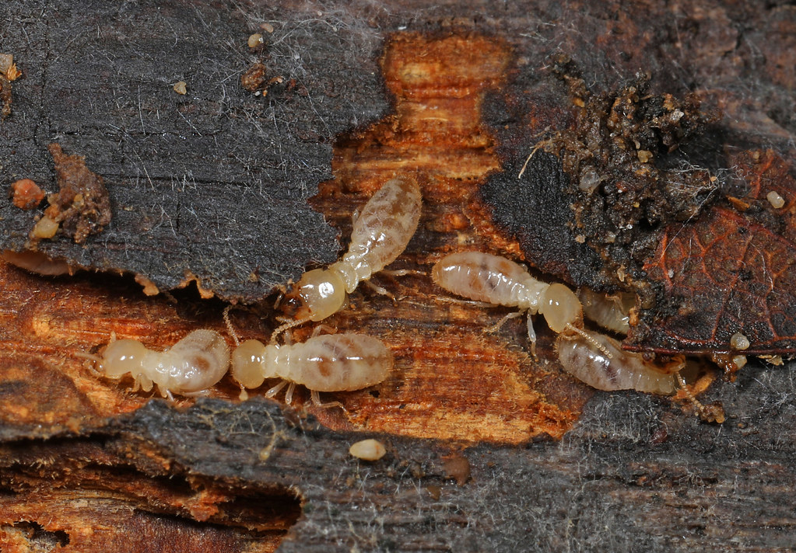
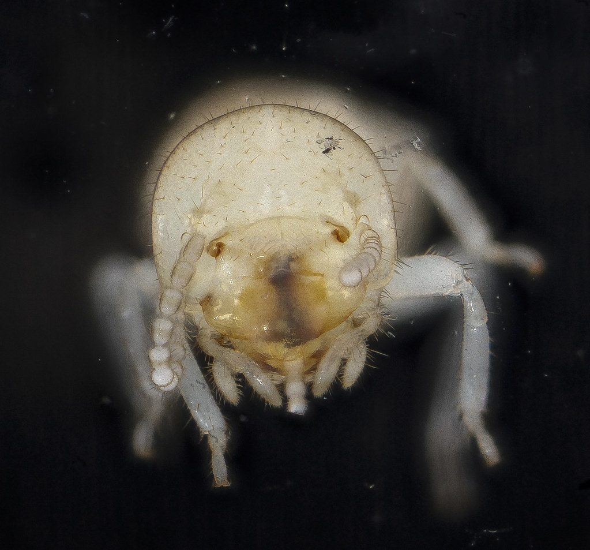
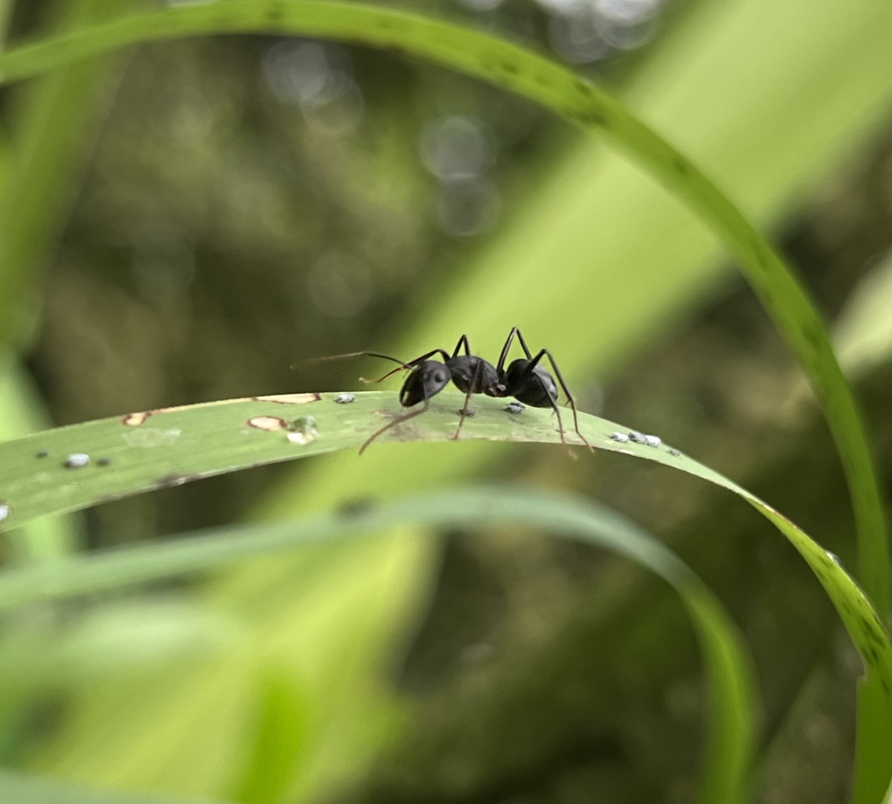
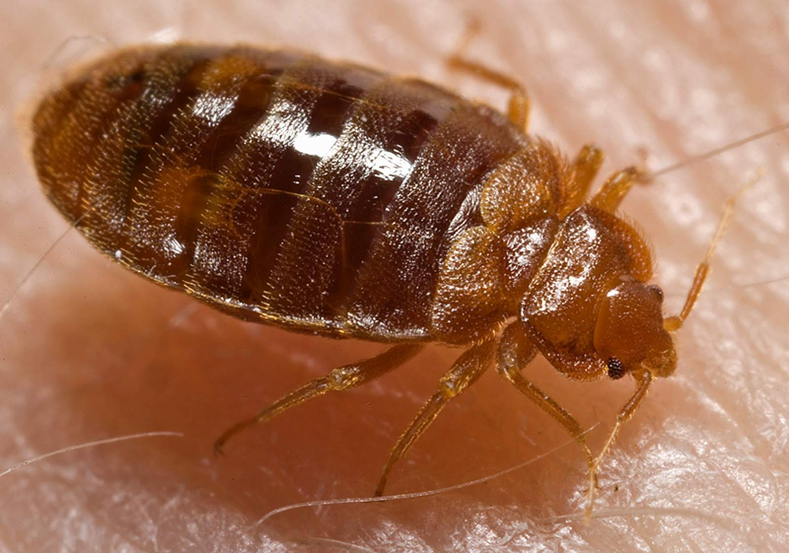
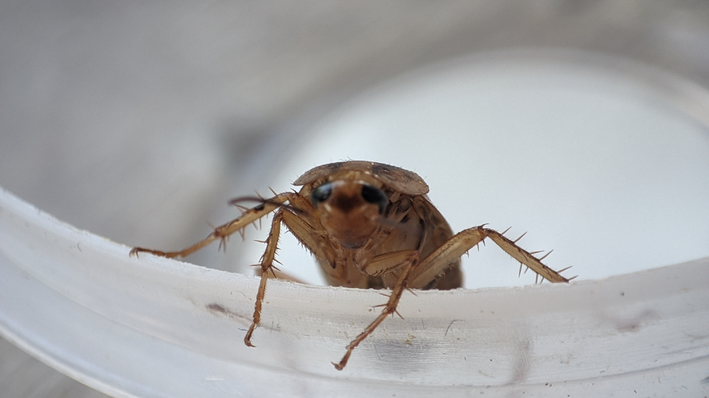
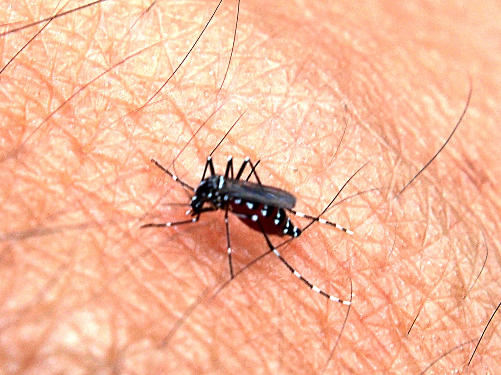
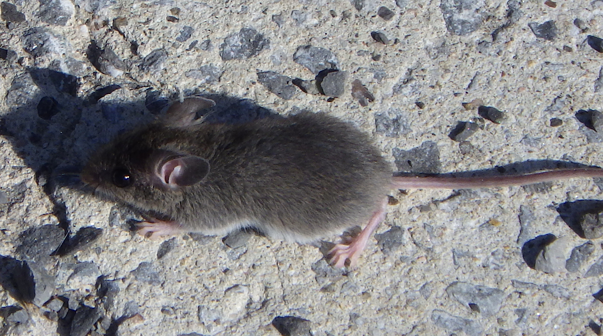

No. 01Reticulitermes flavipes
Subterranean termites
Look forPencil-thin mud tubes on the foundation and piles of shed wings near windows in spring.
Residential pest control · Field-guide method
Most treatments fail because the pest was never properly identified. Fieldmark technicians identify the exact species first, then treat the source with pet- and family-safe Integrated Pest Management — and leave you a written field report of everything they found.
No contract to inspect · Written report every visit

A full interior and exterior walk-through, no obligation to buy.
If covered pests return between visits, we come back at no extra cost.
Exclusion and targeted baits first; sprays only where they are needed.
Species found, entry points, what we applied and where. Every visit.
The specimen index
Six pests behind most of the calls homeowners make. Match the sign you've spotted, then book an inspection so we can confirm the species.

No. 01Reticulitermes flavipes
Look forPencil-thin mud tubes on the foundation and piles of shed wings near windows in spring.

No. 02Family Formicidae
Look forSteady trails along baseboards and counters that lead back to a crack or window frame.

No. 03Cimex lectularius
Look forRust-coloured spots along mattress seams and itchy bites in lines or clusters.

No. 04Blattella germanica
Look forPepper-like droppings behind the fridge, stove or under the sink, where it's warm and damp.

No. 05Aedes albopictus
Look forDaytime biting near shade. They breed in standing water as small as a bottle cap.

No. 06Mus musculus
Look forScratching in walls at night, gnawed food packaging and droppings in cupboards.
Seeing something that isn't here? Send us a photo when you book and we'll identify it before the visit.
Identify my pestThe Fieldmark difference
We compared how the biggest national brands sell pest control. Here is what a typical visit leaves out, and what you get from us instead.
Our method
Every visit follows the same field-notebook routine, so you always know what was done and why.
Attic to crawlspace, plus the yard line, gutters and foundation. We look for activity, damage and the conditions pests need.
We confirm the species, because the right treatment depends on it. Unsure? We collect a sample and check.
Exclusion and sealing first, then targeted baits and treatments at the source, not blanket spraying.
You get a field report with what we found, photos, products used and what to watch for next.
Plans
Every plan starts with a free inspection. We quote after we've seen your home, so you only pay for what it actually needs.
One-time
One pest, one problem, solved properly.
Most chosen · Quarterly
Seasonal visits that stay ahead of pests.
Termites · Annual
Protect the structure, not just the surface.
Questions
Can't find yours? Call (555) 010-2468 and talk to a technician, not a script.
Yes. We inspect inside and out, identify what we find and give you a written quote. There's no obligation to book a treatment.
We follow Integrated Pest Management: sealing entry points and using targeted baits first, and applying products only where they're needed. Before we start, we tell you exactly what we'll use and how long to keep pets and children away from treated areas.
On a recurring plan, if covered pests return between scheduled visits, we come back and re-treat at no extra cost.
No. One-time treatments have no ongoing commitment, and recurring plans are explained in full at your inspection before you agree to anything.
A written summary after every visit: the species we found, photos of activity and entry points, products applied and where, and what to watch for before the next visit.
Free inspection
We'll call you back to arrange a time that suits you. Prefer to talk now? Call us directly.
Call (555) 010-2468